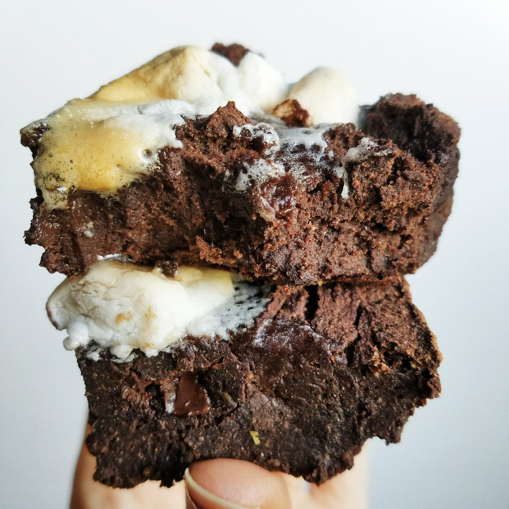
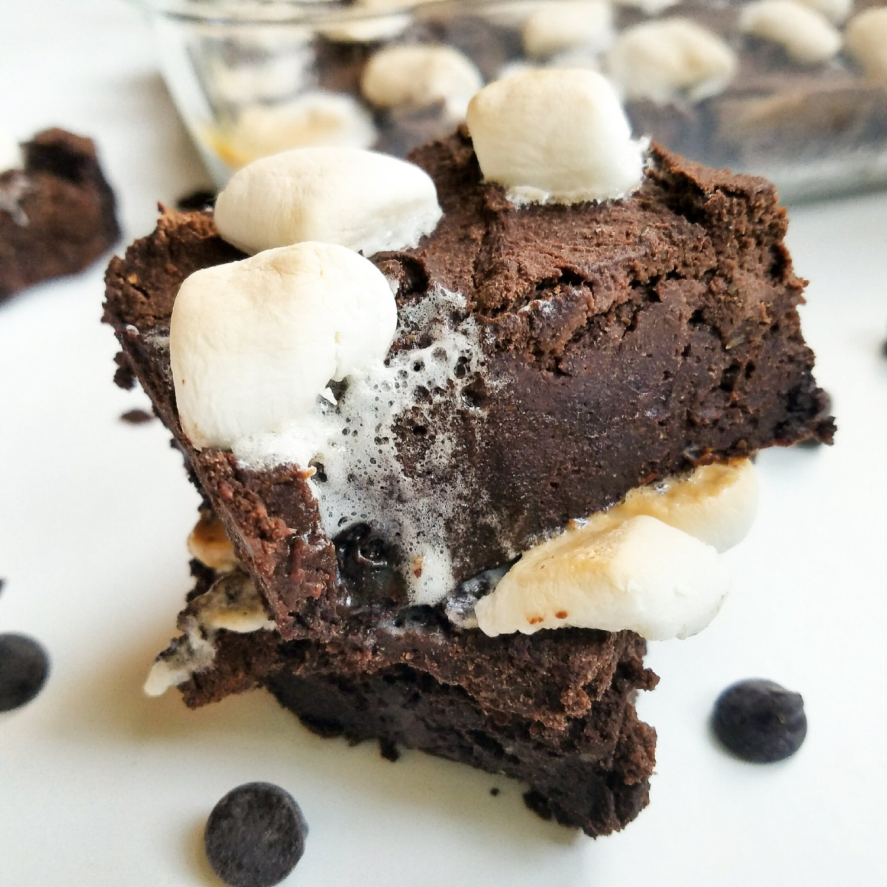
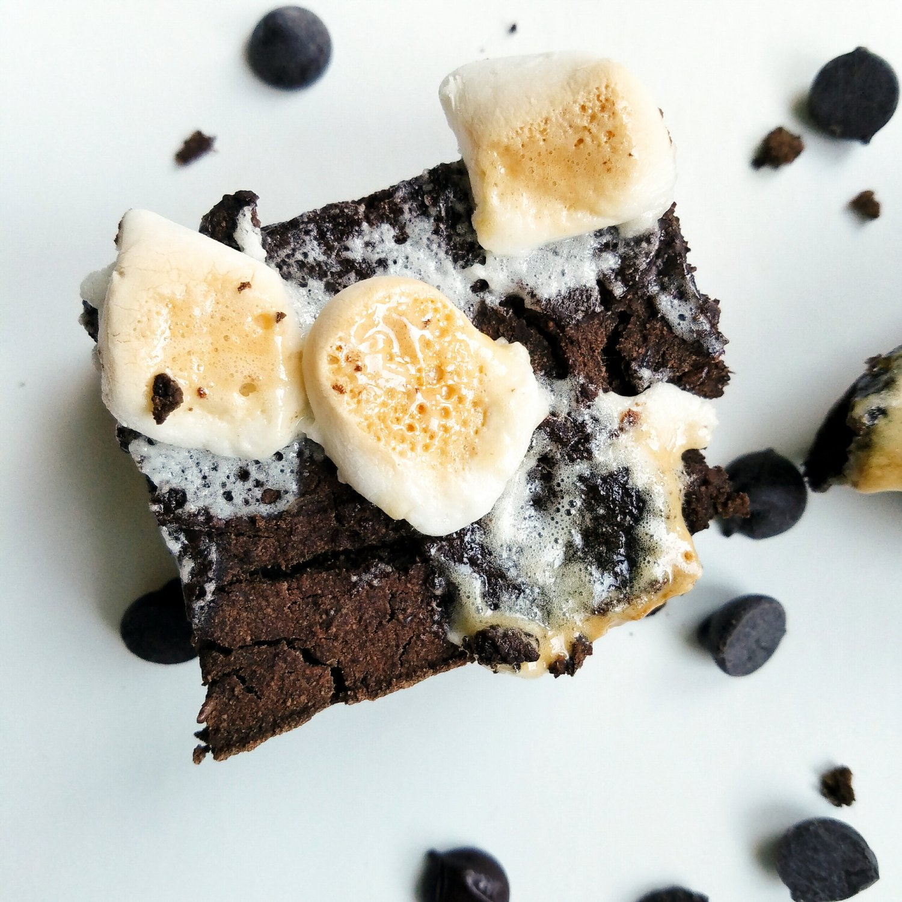

Vegan Chocolate Marshmallow Bars (gluten free)



These dense, rich double chocolate bars with a marshmallow topping take the delicious level over the top! Unbelievably healthy yet so decadent, these vegan chocolate marshmallow bars are great warm or chilled. They are gluten free, dairy free, and vegan, and they can be made sugar free!
For the dark chocolate lovers, these bars are absolutely for you. Generally, I'm not a huge fan of chocolate things. I'm not sure why, but I'm not. I've always preferred white chocolate (major sweet tooth, I know) to milk or dark chocolates. Anybody with me? I mean I'm not biased or anything but clearly white chocolate is best. The sugar...the cream...I'm all about that. I want to start a rally for white chocolate...but back to the bars. They are very rich and indulgent. At just over 100 calories a bar, they are sure to kick any chocolate craving with a quick hit of deep chocolate. The perfectly browned marshmallows balance it out, giving it the creaminess I crave.
The texture is unmatched. These are not cakey or fluffy brownies, these are dense and, I repeat, decadent. Say it with me, class. Dense and decadent. Decadent...and dense. Rich double chocolate. Choooocolatteeeeee. Mmmmmmm.
Shoutout to Nikki for sending me a picture of hers on twitter! It always makes me so happy to see you guys enjoying what I create. I don't think ya'll realize how giddy I get. :3Since these bars are intended to be a deep chocolate, they are not extremely sweet. Although there is stevia in the recipe for a base sweetness, some may be wanting an even sweeter recipe. If you do, feel free to add 1/4 cup maple syrup to the batter before baking. This is absolutely optional, though! If you want a completely sugar free recipe, don't use the maple syrup, and ensure that the chocolate chips and marshmallows you use are sugar free. Voilà! Sugar free!
These vegan chocolate marshmallow bars are also gluten free and free of butter or oil. They are great warm or chilled. Personally, I like most of my baked goodies cold. My friends look at me weird, but whateva whateva, I do what I want. Try them out and let me know which way you prefer! Although the correct answer is cold, obviously. :p
Vegan Chocolate Marshmallow Bars
Serves: 12
-
1/2 cup coconut flour
-
1/2 cup buckwheat flour
-
1/2 cup unsweetened cocoa powder
-
1/4 cup ground flax seeds
-
3/4 cup baking stevia
-
3/4 cup canned pumpkin puree
-
1.5 cups unsweetened almond milk
-
1 TBSP baking powder
-
1/4 cup maple syrup (Optional)
-
1/4 cup vegan chocolate chips, or more
-
vegan marshmallows, for topping (I did 2 servings mini marshmallows)
-
Mix the ingredients in a bowl except for the chocolate chips and marshmallows. The maple syrup is very optional. I made it without the syrup, which came out to a rich chocolate flavor I like. But for those who want sweeter, use the syrup.
-
Fold in the chocolate chips into the batter.
-
Spray a 9x9 baking dish with nonstick spray & pour in the batter. Top with marshmallows - the amount is up to your discretion but I used approximately 40 mini marshmallows (2 servings).
-
Bake at 350 F for 40 minutes. Let cool 10 minutes, cut into 12 bars, and serve.
1 serving: 105 cals; 4 g fat, 17 g carb, 3 g protein.